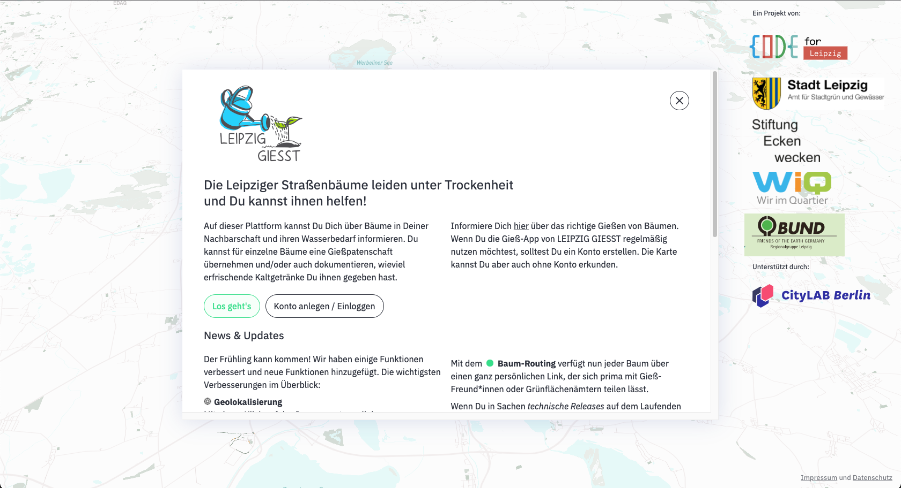

Klimamodell der Senatsverwaltung für Stadtentwicklung und Wohnen
Landesamt für Gesundheit und Soziales (LaGeSo)
Open Street Map
...
Open Data! Mehr dazu später von ODIS
Tech Stack
Framework: Next.js
Code Quality: TypeScript, ESLint, Prettier, Husky
Testing: Jest, React Testing Library
UI Components: Storybook
Deployment: Vercel.com
and ...
Fokus 1:
Mapbox.com
Online-Service für Karten und Navigation
Warum Mapbox?
Online Editor zur Gestaltung von Background Maps
Einfache Nutzung von Vector Tiles und Raster Tiles
Geocoding API
Warum vielleicht irgendwann
nicht mehr Mapbox?
Neues Lizenzmodell für Mapbox GL JS seit v2
(nicht mehr komplett Open Source)
From GeoJSON to Vector Tileset
28MB GeoJSONVector Tileset in Mapbox
Referenzieren der Mapbox Tileset URL und des Layer Names in
JavaScript
Temperaturflächen auf der Erfrischungskarte
Fokus 2:
Nachnutzbarkeit
BerlinerErfrischungskarte
PotsdamerErfrischungskarte
HamburgerErfrischungskarte
Exkurs: Gieß den Kiez
Gieß den Kiez

LEIPZIG GIESST
Voraussetzungen
Daten vorhanden
Höhendaten, Temperatur-/Winddaten für mehrere Stunden,
etc.
Verständliche Strukturierung der Codebase
Z.B. Separation of Concerns
Verständliche Dokumentation
"How to spin your own Erfrischungskarte"
Ort-spezifische Inhalte in einem OrdnerKonfiguration für andere Städte